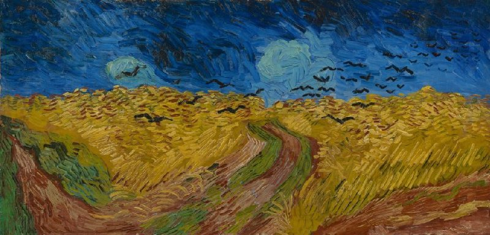

Wheatfield with Crows
Painted in 1890. Some believe that this was Van Gogh's last work. The sky of the painting is suppose to express sadness, while the wheat fields are suppose to show off a piece of healthy land causing conflicting emotions. Since it is believe that this was his painting, or at least one of his last, it also believed that this painting was a reference to the end of his life.
Sunflowers
![[Sunflowers]](img/sunflowers.jpg)
This painting was one of Van Gogh's favorite. There is a clear color theme to the painting which is yellow. He used three different shades of yellow. This painting is meant to establish eloquence and calmness.
The Bedroom
![[The Bedroom]](img/the-bedroom.jpg)
This is a painting of Van Gogh's bedroom in Arles. While the painting looks great, it has lost its original color due to discoloration over the years. Nonetheless, the same themes can still be recognized with these colors.
The Potato Eaters
![[The Potato Eaters]](img/the-potato-eaters.jpg)
This painting is meant to show the harsh life a family can have living in the country. This painting has no bright colors which gives off the theme of struggling. When the painting was first shown off, it was critize because of its dark coloring, but now it is considered one of Van Gogh's masterpieces.
The Starry Night
![[The Starry Night]](img/the-stary-night.jpg)
This is Van Gogh's most famous painting. It was painted in 1889. Van Gogh was in an asylum getting help with his mental health when he painted this. This painting is suppose to reflect the view he had on the country side while looking out his window in the asylum he was kepted in, which shows the theme of being sentimental.